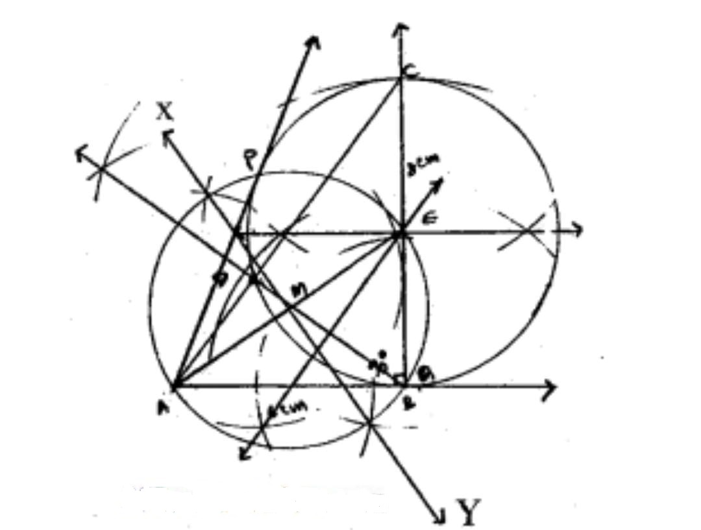

(Q5)Let ABC be a right triangle in which AB = 6 cm, BC = 8 cm and ∠B = 90°. BD is the perpendicular from B on AC. The circle through B, C, D is drawn. Construct the tangents from A to this circle.

Steps of construction
Draw ABC such that AB = cm;∠B = ° and BC= cm
Drop a perpendicular BD from B on AC
Draw the circumcircle to ABCD. Let '' be its center
Join AE and draw its perpendicular bisector XY. Let it meet AE at
Taking M as center and MA or ME as radius draw a circle, which cuts the circumcircle of triangle BCD at P and B
Join AP and extend AB, which are the required tangents